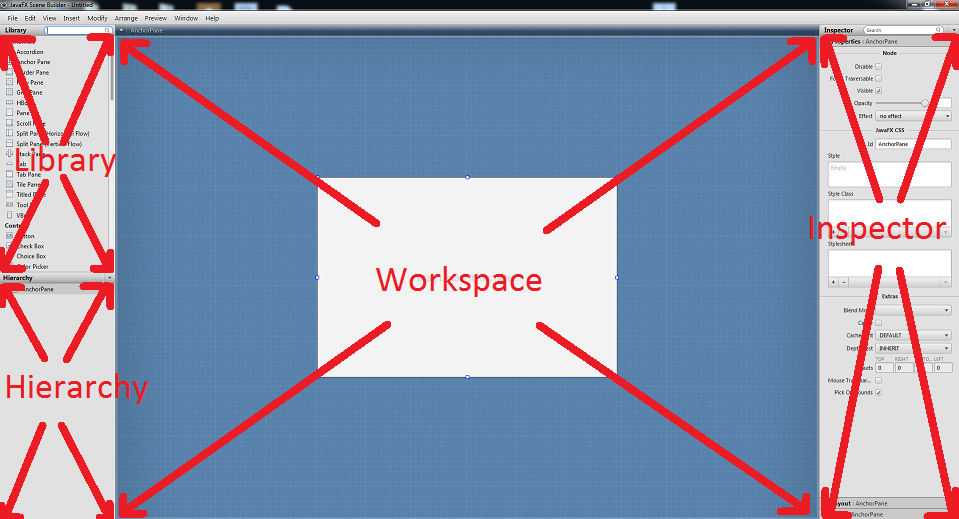

Scene Builder
Scene Builder is an awesome and easy way to build user interfaces and their fxml files. As a result we are going to use Scene Builder to build our To-Do list application's UI. We will go over where to get Scene Builder, some of the basics of scene builder, and then the actual building of our UI for the application. Don't be afraid to reference the JavaFX API for further clarification on topics.
Downloading Scene Builder
To download Scene Builder click here. Once this is done go through the installation process.
Basics of Scene Builder
Open Scene Builder and hopefully you see something similar to below. In this section we will discuss the main subwindows of Scene Builder.
Library
The library contains the items that JavaFX uses to create and organize user interfaces. These items are separated into small groups such containers, controls, and so on. Containers are used generally for controlling the layout. The controls section contains items that help facilitate output and user input like buttons and text areas.
Workspace
This is your canvas. This is the window where you will drag items from the library. Since the containers can hold other containers, this is also the area where you can change the layout.
hierarchy
Using the workspace when trying to organize empty containers can make it difficult to select the specific container you would like to move. Scene Builder's response to this problem is the hierarchy. This contains a tree of the placed items within the workspace and gives us an alternative way to select items and also allows a nice visual of the organized items.
Inspector
The inspector is active when an item from the library is selected. Once an item is selected three tabs will show: properties, layout, and code. Properties is just a generic properties section that most items have. The layout tab shows layout related properties such as height, width, spacing, and padding. And last but not least, the code section holds event handlers which will prove useful later on in this tutorial.
Building the User Interface
The Login Page
Let's take a look at what we will create.

Now, let us look at what makes this layout.

Now...let's build it. We need to decide on a main layout structure for the login page of our application. Not surprisingly, we will use an AnchorPane. Anchorpanes allow for the positioning of child nodes within the pane with respect to the edges. This also seems to be the default layout when creating new fxml files with Scene Builder. If the anchorpane is not the current container in the workspace go to File>New With Root Container>Anchor Pane and call this new file "Login.fxml". Change the pref width and pref height to 800 and 600 respectively. The pref width and pref height determine the default size of the window when the application is opened.
Now under the container section in the library find the VBox. Items placed within a VBox will stack vertically. The HBox does the same, just horizontally. Drag a VBox to the anchor pane slowly, you will see red lines show up around the edges and the centers of the sides. When an item is placed on a vertical red line the layout property layout x is set to that red line. When an item is placed with a horizontal line, the layout y property is set. For this VBox we would like to place it in the center of the anchor pane, two perpendicular red lines will show up when you're close as shown below.
Change the spacing property under the layout tab in the inspector to 10. This will space the items placed within this container to have a spacing of 10 between them. Which will help make things look less crammed. We would also like the constraints of the VBox to the anchor pane to be centered and allow room for the containers we will add. To do this, change the constraints under the layout properties in the inspector as shown.
Next change the node property alignment in the inspector subwindow to CENTER. This will make all nodes within the vbox become centered with respect to the vbox's borders.Now that we have a VBox, we need a title for the login page, under the controls section in the library find a label. Labels provide an easy way to display text. Drag this item into the VBox and drop it. Select the label and look under the inspector and in the properties section change the text value to "Too To Do Login." Pay attention to the hierarchy. Note how the tree evolves as we add in extra items, specifically pay attention to the indentation of each item placed. This will help us when we add our next few items.
We will now add 3 HBoxs under the label that we just placed. If the VBox becomes crowded and makes placing an HBox difficult try dragging the hbox to the hierarchy section and drag it over the VBox, some yellow lines should show and give a preview of where the hbox will be placed within the tree. Change the pref width and pref height of these boxes to USE_COMPUTED_SIZE, this will make the HBox snug around the items within it. Also set the alignment properties to CENTER. Next place another label underneath all the items in the vbox. This label will show a text when a user login fails. In order to access this label to activate it we will need a way to reference it. Go to the code section in the inspector and change the fx:id value to "loginFailed". This is how we will reference this item in code.
Now we need a place for the user to enter an account name and a password. In the top 2 hboxs, place a label and a TextField both of which are found in the controls section. Text fields are used to receive typed user input. After placing these items your hierarchy should look like the image below.
Lets change the top hbox label text value to "Username:" and the middle hbox label text value to "Password:". Next we will make the text fields user friendly. Change the prompt text, under the properties tab in the inspector to "Username" and "Password" for the top and bottom text fields respectively. The prompt text will show when the text field is empty and help users know what to type. If the field is selected, the prompt text does not show. Just like the login fail label, we need a way to reference these text fields in order to get the text within them. Give the login text field the fx:id "loginTextField" and the password text field the fx:id "passwordField".
The next components we need are buttons in order to prompt actions by the program. Find buttons in the controls section and place 2 in the 3rd hbox. Your hierarchy should resemble the form show below.

Your buttons may be very close together, in order to space them out go to the spacing property value to 40. Next, change the text properties of the buttons to say "Login" and "Register". Now we need to know what functions to call when the buttons are pressed. For these 2 buttons we will have 2 different functions that are called when each one is pressed handleLoginButton() and handleRegisterButton(). In order for these buttons to know what function to call, we will go into the code section of the inspector for each button and change the On Action field to handleLoginButton and handleRegisterButton depending on the button. When these buttons are clicked the corresponding On Action functions will be called. Also give the login button and register button fx:ids loginButton and registerButton.
The login page is now complete! Next we will build the registration page.
The Registration Page
Good news! This is essentially the login page with a few properties changed and the addition of an hbox. You may either build it from the ground up or create a copy of login.fxml and update it. For the sake of brevity and the repetitious nature of the page, we will go with the latter. BUT! If you would like a nice challenge try to replicate the page based on the picture below and see how you do! The starting pane was an anchor pane.